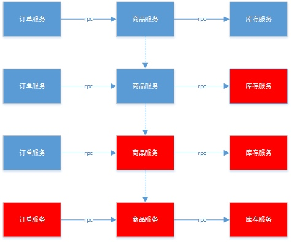
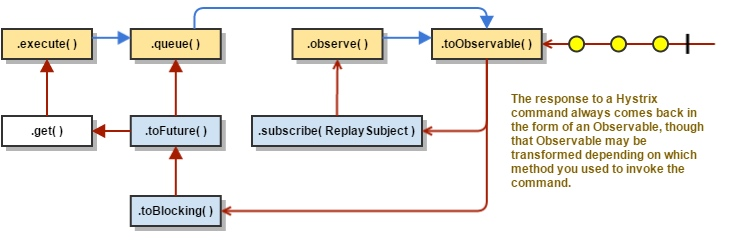
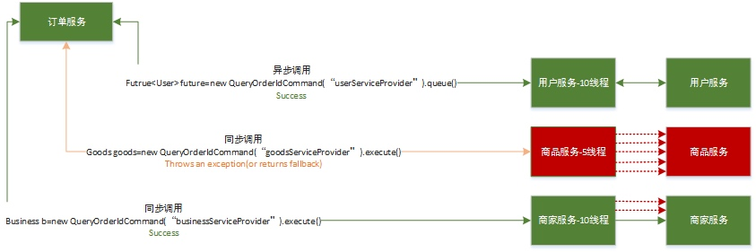
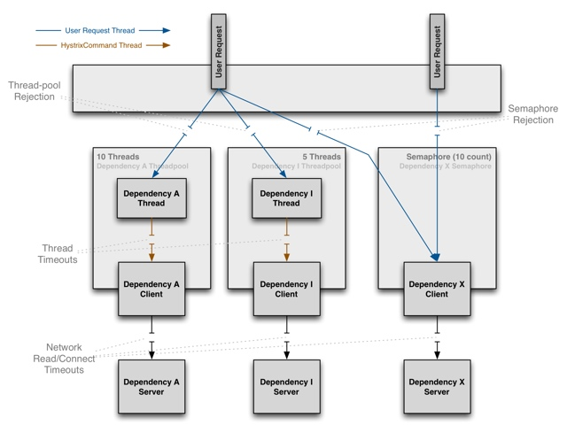
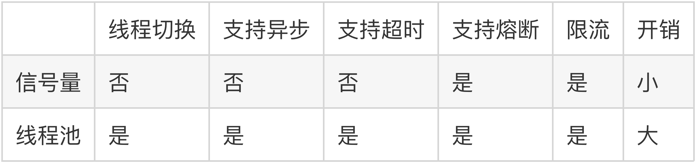
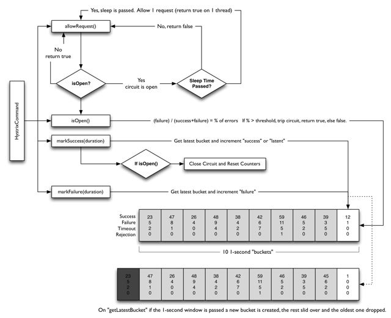

分布式系统环境下，服务间类似依赖非常常见，一个业务调用通常依赖多个基础服务。如下图，对于同步调用，当库存服务不可用时，商品服务请求线程被阻塞，当有大批量请求调用库存服务时，最终可能导致整个商品服务资源耗尽，无法继续对外提供服务。并且这种不可用可能沿请求调用链向上传递，这种现象被称为雪崩效应。

硬件故障：如服务器宕机，机房断电，光纤被挖断等。
流量激增：如异常流量，重试加大流量等。
缓存穿透：一般发生在应用重启，所有缓存失效时，以及短时间内大量缓存失效时。大量的缓存不命中，使请求直击后端服务，造成服务提供者超负荷运行，引起服务不可用。
程序BUG：如程序逻辑导致内存泄漏，JVM长时间FullGC等。
同步等待：服务间采用同步调用模式，同步等待造成的资源耗尽
针对造成雪崩效应的不同场景，可以使用不同的应对策略，没有一种通用所有场景的策略，参考如下：
硬件故障：多机房容灾、异地多活等。
流量激增：服务自动扩容、流量控制（限流、关闭重试）等。
缓存穿透：缓存预加载、缓存异步加载等。
程序BUG：修改程序bug、及时释放资源等。
同步等待：资源隔离、MQ解耦、不可用服务调用快速失败等。资源隔离通常指不同服务调用采用不同的线程池；不可用服务调用快速失败一般通过熔断器模式结合超时机制实现。
Hystrix 中文含义是豪猪，因其背上长满棘刺，从而拥有了自我保护的能力。本文所说的Hystrix是Netflix开源的一款容错框架，同样具有自我保护能力。为了实现容错和自我保护，下面我们看看Hystrix如何设计和实现的。
对来自依赖的延迟和故障进行防护和控制——这些依赖通常都是通过网络访问的
阻止故障的连锁反应
快速失败并迅速恢复
回退并优雅降级
提供近实时的监控与告警
防止任何单独的依赖耗尽资源（线程）
过载立即切断并快速失败，防止排队
尽可能提供回退以保护用户免受故障
使用隔离技术（例如隔板，泳道和断路器模式）来限制任何一个依赖的影响
通过近实时的指标，监控和告警，确保故障被及时发现
通过动态修改配置属性，确保故障及时恢复
防止整个依赖客户端执行失败，而不仅仅是网络通信
使用命令模式将所有对外部服务（或依赖关系）的调用包装在HystrixCommand或HystrixObservableCommand对象中，并将该对象放在单独的线程中执行；
每个依赖都维护着一个线程池（或信号量），线程池被耗尽则拒绝请求（而不是让请求排队）。
记录请求成功，失败，超时和线程拒绝。
服务错误百分比超过了阈值，熔断器开关自动打开，一段时间内停止对该服务的所有请求。
请求失败，被拒绝，超时或熔断时执行降级逻辑。
近实时地监控指标和配置的修改。
第一步，继承HystrixCommand实现自己的command，在command的构造方法中需要配置请求被执行需要的参数，并组合实际发送请求的对象，代码如下
public class QueryOrderIdCommand extends HystrixCommand<Integer> {
private final static Logger logger = LoggerFactory.getLogger(QueryOrderIdCommand.class);
private OrderServiceProvider orderServiceProvider;
public QueryOrderIdCommand(OrderServiceProvider orderServiceProvider) {
super(Setter.withGroupKey(HystrixCommandGroupKey.Factory.asKey("orderService"))
.andCommandKey(HystrixCommandKey.Factory.asKey("queryByOrderId"))
.andCommandPropertiesDefaults(HystrixCommandProperties.Setter()
.withCircuitBreakerRequestVolumeThreshold(10)//至少有10个请求，熔断器才进行错误率的计算
.withCircuitBreakerSleepWindowInMilliseconds(5000)//熔断器中断请求5秒后会进入半打开状态,放部分流量过去重试
.withCircuitBreakerErrorThresholdPercentage(50)//错误率达到50开启熔断保护
.withExecutionTimeoutEnabled(true))
.andThreadPoolPropertiesDefaults(HystrixThreadPoolProperties
.Setter().withCoreSize(10)));
this.orderServiceProvider = orderServiceProvider;
}
@Override
protected Integer run() {
return orderServiceProvider.queryByOrderId();
}
@Override
protected Integer getFallback() {
return -1;
}
}
第二步，调用HystrixCommand的执行方法发起实际请求。
@Test
public void testQueryByOrderIdCommand() {
Integer r = new QueryOrderIdCommand(orderServiceProvider).execute();
logger.info("result:{}", r);
}
Hystrix 处理流程
Hystrix整个工作流如下：
构造一个 HystrixCommand 或 HystrixObservableCommand 对象，用于封装请求，并在构造方法配置请求被执行需要的参数；
执行命令，Hystrix提供了4种执行命令的方法，后面详述；
判断是否使用缓存响应请求，若启用了缓存，且缓存可用，直接使用缓存响应请求。Hystrix支持请求缓存，但需要用户自定义启动；
判断熔断器是否打开，如果打开，跳到第8步；
判断线程池/队列/信号量是否已满，已满则跳到第8步；
执行HystrixObservableCommand.construct()或HystrixCommand.run()，如果执行失败或者超时，跳到第8步；否则，跳到第9步；
统计熔断器监控指标；
走Fallback备用逻辑
返回请求响应
从流程图上可知道，第5步线程池/队列/信号量已满时，还会执行第7步逻辑，更新熔断器统计信息，而第6步无论成功与否，都会更新熔断器统计信息。
Hystrix提供了4种执行命令的方法，execute()和queue() 适用于HystrixCommand对象，而observe()和toObservable()适用于HystrixObservableCommand对象。
以同步堵塞方式执行run()，只支持接收一个值对象。hystrix会从线程池中取一个线程来执行run()，并等待返回值。
以异步非阻塞方式执行run()，只支持接收一个值对象。调用queue()就直接返回一个Future对象。可通过 Future.get()拿到run()的返回结果，但Future.get()是阻塞执行的。若执行成功，Future.get()返回单个返回值。当执行失败时，如果没有重写fallback，Future.get()抛出异常。
事件注册前执行run()/construct()，支持接收多个值对象，取决于发射源。调用observe()会返回一个hot Observable，也就是说，调用observe()自动触发执行run()/construct()，无论是否存在订阅者。
如果继承的是HystrixCommand，hystrix会从线程池中取一个线程以非阻塞方式执行run()；如果继承的是HystrixObservableCommand，将以调用线程阻塞执行construct()。
observe()使用方法：
调用observe()会返回一个Observable对象
调用这个Observable对象的subscribe()方法完成事件注册，从而获取结果
事件注册后执行run()/construct()，支持接收多个值对象，取决于发射源。调用toObservable()会返回一个cold Observable，也就是说，调用toObservable()不会立即触发执行run()/construct()，必须有订阅者订阅Observable时才会执行。
如果继承的是HystrixCommand，hystrix会从线程池中取一个线程以非阻塞方式执行run()，调用线程不必等待run()；如果继承的是HystrixObservableCommand，将以调用线程堵塞执行construct()，调用线程需等待construct()执行完才能继续往下走。
toObservable()使用方法：
调用observe()会返回一个Observable对象
调用这个Observable对象的subscribe()方法完成事件注册，从而获取结果
需注意的是，HystrixCommand也支持toObservable()和observe()，但是即使将HystrixCommand转换成Observable，它也只能发射一个值对象。只有HystrixObservableCommand才支持发射多个值对象。

execute()实际是调用了queue().get()
queue()实际调用了toObservable().toBlocking().toFuture()
observe()实际调用toObservable()获得一个cold Observable，再创建一个ReplaySubject对象订阅Observable，将源Observable转化为hot Observable。因此调用observe()会自动触发执行run()/construct()。
Hystrix总是以Observable的形式作为响应返回，不同执行命令的方法只是进行了相应的转换。
Hystrix的容错主要是通过添加容许延迟和容错方法，帮助控制这些分布式服务之间的交互。 还通过隔离服务之间的访问点，阻止它们之间的级联故障以及提供回退选项来实现这一点，从而提高系统的整体弹性。Hystrix主要提供了以下几种容错方法：
下面我们详细谈谈这几种容错机制。
资源隔离主要指对线程的隔离。Hystrix提供了两种线程隔离方式：线程池和信号量。
Hystrix通过命令模式对发送请求的对象和执行请求的对象进行解耦，将不同类型的业务请求封装为对应的命令请求。如订单服务查询商品，查询商品请求->商品Command；商品服务查询库存，查询库存请求->库存Command。并且为每个类型的Command配置一个线程池，当第一次创建Command时，根据配置创建一个线程池，并放入ConcurrentHashMap，如商品Command：
final static ConcurrentHashMap<String, HystrixThreadPool> threadPools = new ConcurrentHashMap<String, HystrixThreadPool>();
...
if (!threadPools.containsKey(key)) {
threadPools.put(key, new HystrixThreadPoolDefault(threadPoolKey, propertiesBuilder));
}
后续查询商品的请求创建Command时，将会重用已创建的线程池。线程池隔离之后的服务依赖关系：
通过将发送请求线程与执行请求的线程分离，可有效防止发生级联故障。当线程池或请求队列饱和时，Hystrix将拒绝服务，使得请求线程可以快速失败，从而避免依赖问题扩散。
优点：
保护应用程序以免受来自依赖故障的影响，指定依赖线程池饱和不会影响应用程序的其余部分。
当引入新客户端lib时，即使发生问题，也是在本lib中，并不会影响到其他内容。
当依赖从故障恢复正常时，应用程序会立即恢复正常的性能。
当应用程序一些配置参数错误时，线程池的运行状况会很快检测到这一点（通过增加错误，延迟，超时，拒绝等），同时可以通过动态属性进行实时纠正错误的参数配置。
如果服务的性能有变化，需要实时调整，比如增加或者减少超时时间，更改重试次数，可以通过线程池指标动态属性修改，而且不会影响到其他调用请求。
除了隔离优势外，hystrix拥有专门的线程池可提供内置的并发功能，使得可以在同步调用之上构建异步门面（外观模式），为异步编程提供了支持（Hystrix引入了Rxjava异步框架）。
注意：尽管线程池提供了线程隔离，我们的客户端底层代码也必须要有超时设置或响应线程中断，不能无限制的阻塞以致线程池一直饱和。
缺点：
通常情况下，线程池引入的开销足够小，不会有重大的成本或性能影响。但对于一些访问延迟极低的服务，如只依赖内存缓存，线程池引入的开销就比较明显了，这时候使用线程池隔离技术就不适合了，我们需要考虑更轻量级的方式，如信号量隔离。
上面提到了线程池隔离的缺点，当依赖延迟极低的服务时，线程池隔离技术引入的开销超过了它所带来的好处。这时候可以使用信号量隔离技术来代替，通过设置信号量来限制对任何给定依赖的并发调用量。下图说明了线程池隔离和信号量隔离的主要区别：

使用线程池时，发送请求的线程和执行依赖服务的线程不是同一个，而使用信号量时，发送请求的线程和执行依赖服务的线程是同一个，都是发起请求的线程。先看一个使用信号量隔离线程的示例：
public class QueryByOrderIdCommandSemaphore extends HystrixCommand<Integer> {
private final static Logger logger = LoggerFactory.getLogger(QueryByOrderIdCommandSemaphore.class);
private OrderServiceProvider orderServiceProvider;
public QueryByOrderIdCommandSemaphore(OrderServiceProvider orderServiceProvider) {
super(Setter.withGroupKey(HystrixCommandGroupKey.Factory.asKey("orderService"))
.andCommandKey(HystrixCommandKey.Factory.asKey("queryByOrderId"))
.andCommandPropertiesDefaults(HystrixCommandProperties.Setter()
.withCircuitBreakerRequestVolumeThreshold(10)////至少有10个请求，熔断器才进行错误率的计算
.withCircuitBreakerSleepWindowInMilliseconds(5000)//熔断器中断请求5秒后会进入半打开状态,放部分流量过去重试
.withCircuitBreakerErrorThresholdPercentage(50)//错误率达到50开启熔断保护
.withExecutionIsolationStrategy(HystrixCommandProperties.ExecutionIsolationStrategy.SEMAPHORE)
.withExecutionIsolationSemaphoreMaxConcurrentRequests(10)));//最大并发请求量
this.orderServiceProvider = orderServiceProvider;
}
@Override
protected Integer run() {
return orderServiceProvider.queryByOrderId();
}
@Override
protected Integer getFallback() {
return -1;
}
}
由于Hystrix默认使用线程池做线程隔离，使用信号量隔离需要显示地将属性execution.isolation.strategy设置为ExecutionIsolationStrategy.SEMAPHORE，同时配置信号量个数，默认为10。客户端需向依赖服务发起请求时，首先要获取一个信号量才能真正发起调用，由于信号量的数量有限，当并发请求量超过信号量个数时，后续的请求都会直接拒绝，进入fallback流程。
信号量隔离主要是通过控制并发请求量，防止请求线程大面积阻塞，从而达到限流和防止雪崩的目的。
线程池和信号量都可以做线程隔离，但各有各的优缺点和支持的场景，对比如下：
线程池和信号量都支持熔断和限流。相比线程池，信号量不需要线程切换，因此避免了不必要的开销。但是信号量不支持异步，也不支持超时，也就是说当所请求的服务不可用时，信号量会控制超过限制的请求立即返回，但是已经持有信号量的线程只能等待服务响应或从超时中返回，即可能出现长时间等待。线程池模式下，当超过指定时间未响应的服务，Hystrix会通过响应中断的方式通知线程立即结束并返回
现实生活中，可能大家都有注意到家庭电路中通常会安装一个保险盒，当负载过载时，保险盒中的保险丝会自动熔断，以保护电路及家里的各种电器，这就是熔断器的一个常见例子。
Hystrix中的熔断器(Circuit Breaker)也是起类似作用，Hystrix在运行过程中会向每个commandKey对应的熔断器报告成功、失败、超时和拒绝的状态，熔断器维护并统计这些数据，并根据这些统计信息来决策熔断开关是否打开。如果打开，熔断后续请求，快速返回。隔一段时间（默认是5s）之后熔断器尝试半开，放入一部分流量请求进来，相当于对依赖服务进行一次健康检查，如果请求成功，熔断器关闭。
Circuit Breaker主要包括如下6个参数：
circuitBreaker.enabled
circuitBreaker.forceOpen
circuitBreaker.forceClosed
circuitBreaker.errorThresholdPercentage
circuitBreaker.requestVolumeThreshold
circuitBreaker.sleepWindowInMilliseconds

熔断器工作的详细过程如下：
第一步，调用allowRequest()判断是否允许将请求提交到线程池
如果熔断器强制打开，circuitBreaker.forceOpen为true，不允许放行，返回。
如果熔断器强制关闭，circuitBreaker.forceClosed为true，允许放行。此外不必关注熔断器实际状态，也就是说熔断器仍然会维护统计数据和开关状态，只是不生效而已。
第二步，调用isOpen()判断熔断器开关是否打开
如果熔断器开关打开，进入第三步，否则继续；
如果一个周期内总的请求数小于circuitBreaker.requestVolumeThreshold的值，允许请求放行，否则继续；
如果一个周期内错误率小于circuitBreaker.errorThresholdPercentage的值，允许请求放行。否则，打开熔断器开关，进入第三步。
第三步，调用allowSingleTest()判断是否允许单个请求通行，检查依赖服务是否恢复
如果熔断器打开，且距离熔断器打开的时间或上一次试探请求放行的时间超过circuitBreaker.sleepWindowInMilliseconds的值时，熔断器器进入半开状态，允许放行一个试探请求；否则，不允许放行。
此外，为了提供决策依据，每个熔断器默认维护了10个bucket，每秒一个bucket，当新的bucket被创建时，最旧的bucket会被抛弃。其中每个blucket维护了请求成功、失败、超时、拒绝的计数器，Hystrix负责收集并统计这些计数器。
降级，通常指务高峰期，为了保证核心服务正常运行，需要停掉一些不太重要的业务，或者某些服务不可用时，执行备用逻辑从故障服务中快速失败或快速返回，以保障主体业务不受影响。Hystrix提供的降级主要是为了容错，保证当前服务不受依赖服务故障的影响，从而提高服务的健壮性。要支持回退或降级处理，可以重写HystrixCommand的getFallBack方法或HystrixObservableCommand的resumeWithFallback方法。
Hystrix在以下几种情况下会走降级逻辑：
执行construct()或run()抛出异常
熔断器打开导致命令短路
命令的线程池和队列或信号量的容量超额，命令被拒绝
命令执行超时
Fail Fast 快速失败
Fail Silent 无声失败
Fallback: Static
Fallback: Stubbed
Fallback: Cache via Network